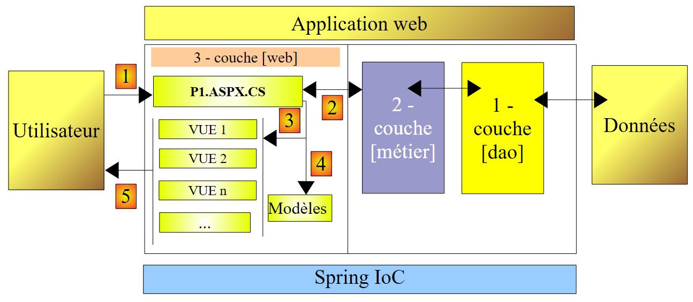
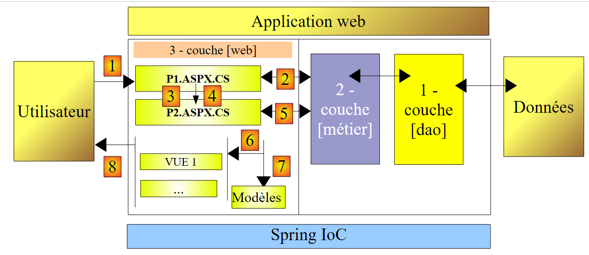
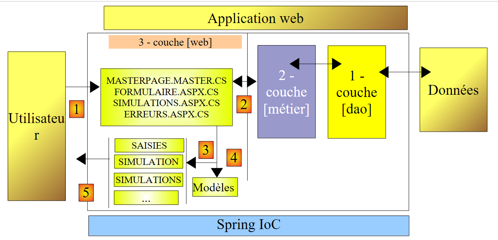
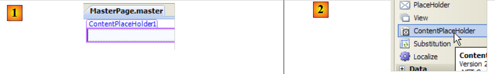
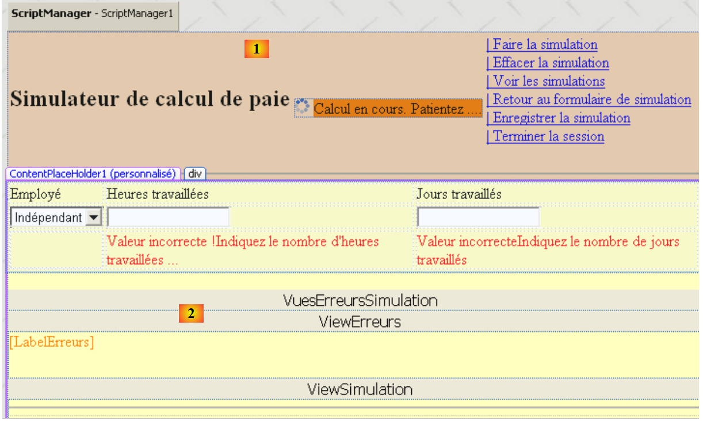
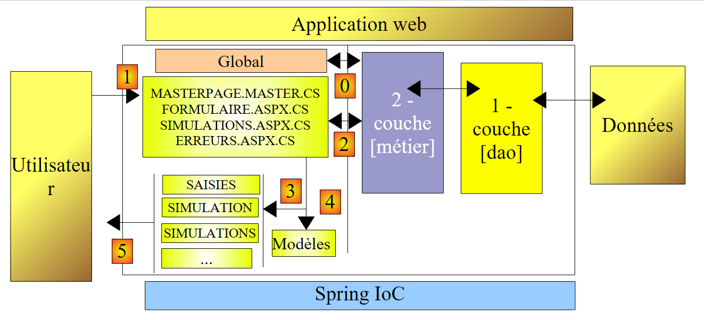
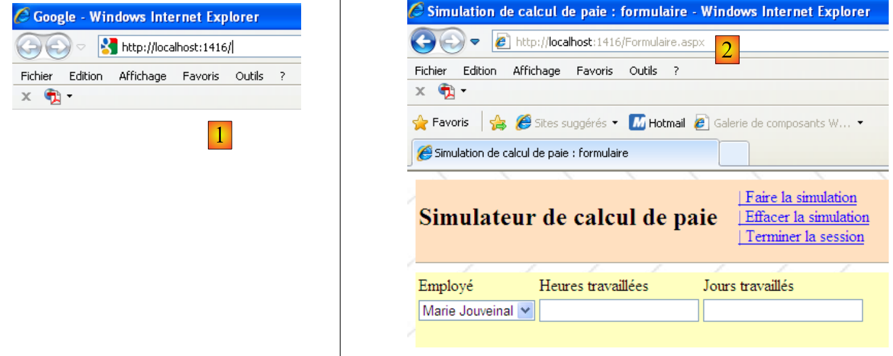

11. L'application [SimuPaie] – version 7 – ASP.NET / multi-vues / multi-pages
Lectures conseillées : référence [1], Développement WEB avec ASP.NET 1.1 paragraphe : Exemples
Nous étudions maintenant une version fonctionnellement identique à l'application ASP.NET à trois couches [pam-v4-3tier-nhibernate-multivues-monopage] étudiée précédemment mais nous modifions l'architecture de cette dernière de la façon suivante : là où dans la version précédente, les vues étaient implémentées par une unique page ASPX, ici elles seront implémentées par trois pages ASPX.
L'architecture de l'application précédente était la suivante :
 |
On a ici une architecture MVC (Modèle – Vue – Contrôleur) :
- [Default.aspx.cs] contient le code du contrôleur. La page [Default.aspx] est l'unique interlocuteur du client. Elle voit passer toutes les requêtes de celui-ci.
- [Saisies, Simulation, Simulations, ...] sont les vues. Ces vues sont implémentées ici, par des composants [View] de la page [Default.aspx].
L'architecture de la nouvelle version sera elle la suivante :
 |
- seule la couche [web] évolue
- les vues (ce qui est présenté à l'utilisateur) ne changent pas.
- le code du contrôleur, qui était dans la version précédente, tout entier dans [Default.aspx.cs] est désormais réparti sur plusieurs pages :
- [MasterPage.master] : une page qui factorise ce qui est commun aux différentes vues : le bandeau supérieur avec ses options de menu
- [Formulaire.aspx] : la page qui présente le formulaire de simulation et gère les actions qui ont lieu sur ce formulaire
- [Simulations.aspx] : la page qui présente la liste des simulations et gère les actions qui ont lieu sur cette même page
- [Erreurs.aspx] : la page qui est affichée lors d'une erreur d'initialisation de l'application. Il n'y a pas d'actions possibles sur cette page.
On peut considérer qu'on a là une architecture MVC à contrôleurs multiples alors que l'architecture de la version précédente était une architecture MVC à contrôleur unique.
Le traitement d'une demande d'un client se déroule selon les étapes suivantes :
- le client fait une demande à l'application. Il la fait à l'une des deux pages [Formulaire.aspx, Simulations.aspx].
- la page demandée traite cette demande. Pour ce faire, elle peut avoir besoin de l'aide de la couche [métier] qui elle-même peut avoir besoin de la couche [dao] si des données doivent être échangées avec la base de données. L'application reçoit une réponse de la couche [métier].
- selon celle-ci, elle choisit (3) la vue (= la réponse) à envoyer au client en lui fournissant (4) les informations (le modèle) dont elle a besoin.
- la réponse est envoyée au client (5)
11.1. Les vues de l'application
Les différentes vues présentées à l'utilisateur sont les suivantes :
- - la vue [VueSaisies] qui présente le formulaire de simulation

- - la vue [VueSimulation] utilisée pour afficher le résultat détaillé de la simulation :

- - la vue [VueSimulations] qui donne la liste des simulations faites par le client

- - la vue [VueSimulationsVides] qui indique que le client n'a pas ou plus de simulations :

- la vue [VueErreurs] qui indique une erreur d'initialisation de l'application :

11.2. Génération des vues dans un contexte multi-contrôleurs
Dans la version précédente, toutes les vues étaient générées à partir de l'unique page [Default.aspx]. Celle-ci contenait deux composants [MultiView] et les vues étaient composées d'une réunion d'un ou deux composants [View] appartenant à ces deux composants [MultiView].
Efficace lorsqu'il y a peu de vues, cette architecture atteint ses limites dès que le nombre des composants formant les différentes vues devient important : en effet, à chaque requête qui est faite à l'unique page [Default.aspx], tous les composants de celle-ci sont instanciés alors même que seuls certains d'entre-eux vont être utilisés pour générer la réponse à l'utilisateur. Un travail inutile est alors fait à chaque nouvelle requête, travail qui devient pénalisant lorsque le nombre total de composants de la page est important.
Une solution est alors de répartir les vues sur différentes pages. C'est ce que nous faisons ici. Etudions deux cas différents de génération de vues :
- la requête est faite à une page P1 et celle-ci génère la réponse
- la requête est faite à une page P1 et celle-ci demande à une page P2 de générer la réponse
11.2.1. Cas 1 : une page contrôleur / vue
Dans le cas 1, on retombe sur l'architecture mono-contrôleur de la version précédente, où la page [Default.aspx] est la page P1 :
 |
- le client fait une demande à la page P1 (1)
- la page P1 traite cette demande. Pour ce faire, elle peut avoir besoin de l'aide de la couche [métier] (2) qui elle-même peut avoir besoin de la couche [dao] si des données doivent être échangées avec la base de données. L'application reçoit une réponse de la couche [métier].
- selon celle-ci, elle choisit (3) la vue (= la réponse) à envoyer au client en lui fournissant (4) les informations (le modèle) dont elle a besoin. Il s'agit ici, de choisir dans la page P1 les composants [Panel] ou [View] à afficher et d'initialiser les composants qu'ils contiennent.
- la réponse est envoyée au client (5)
Voici deux exemples pris dans l'application étudiée :
[page Formulaire.aspx]
 |
- en [1] : l'utilisateur, après avoir demandé la page [Formulaire.aspx], demande une simulation
- en [2] : la page [Formulaire.aspx] a traité cette demande et généré elle-même la réponse en affichant un composant [View] qui n'avait pas été affiché en [1]
[page Simulations.aspx]
 |
- en [1] : l'utilisateur, après avoir demandé la page [Simulations.aspx], veut retirer une simulation
- en [2] : la page [Simulations.aspx] a traité cette demande et généré elle-même la réponse en réaffichant la nouvelle liste de simulations.
 |
11.2.2. Cas 2 : une page 1 contrôleur, une page 2 controleur / vue
Le cas 2 peut recouvrir diverses d'architectures. Nous choisirons la suivante :
 |
- le client fait une demande à la page P1 (1)
- la page P1 traite cette demande. Pour ce faire, elle peut avoir besoin de l'aide de la couche [métier] (2) qui elle-même peut avoir besoin de la couche [dao] si des données doivent être échangées avec la base de données. L'application reçoit une réponse de la couche [métier].
- selon celle-ci, elle choisit (3) la vue (= la réponse) à envoyer au client en lui fournissant (4) les informations (le modèle) dont elle a besoin. Il se trouve qu'ici, la vue à générer doit l'être par une autre page que P1, la page P2. Pour faire les opérations (3) et (4), la page P1 a deux possibilités :
- faire un transfert d'exécution à la page P2 par l'opération [Server.Transfer(" P2.aspx ")]. Dans ce cas, elle peut mettre le modèle destiné à la page P2 dans le contexte de la requête [Context.Items[" clé "]=valeur] ou dans la session de l'utilisateur [Session.[" clé "]=valeur]. La page P2 sera alors instanciée et lors du traitement de son événement Load par exemple, elle pourra récupérer les informations transmises par la page P1 par les opérations [valeur=(Type)Context.Items[" clé "]] ou bien [valeur=(Type)Session[" clé "]] selon les cas, où Type est le type de la valeur associée à la clé. La transmission de valeurs par le contexte Context est la plus appropriée s'il n'y a pas utilité à ce que les valeurs du modèle soient conservées pour une future requête du client.
- demander au client de se rediriger vers la page P2 par l'opération [Response.Redirect(" P2.aspx ")]. Dans ce cas, la page P1 mettra le modèle destiné à la page P2 dans la session, car le contexte Context de requête est supprimé à la fin de chaque requête. Or ici, la redirection va provoquer la fin de la 1ère requête du client vers P1 et l'émission d'une seconde requête de ce même client, vers P2 cette fois. Il y a deux requêtes successives. On sait que la session est l'un des moyens de conserver de la " mémoire " entre requêtes. Il y a d'autres solutions que la session.
- quelque soit la façon dont P2 prend la main, on retombe ensuite dans le cas 1 : P2 a reçu une requête qu'elle va traiter (5) et elle va générer elle-même la réponse (6, 7). On peut aussi imaginer que la page P2 va après traitement de la requête, passer la main à une page P3, et ainsi de suite.
Voici un exemple pris dans l'application étudiée :
 |
- en [1] : l'utilisateur qui a demandé la page [Formulaire.aspx] demande à voir la liste des simulations
- en [2] : la page [Formulaire.aspx] traite cette demande et redirige le client vers la page [Simulations.aspx]. C'est cette dernière qui fournit la réponse à l'utilisateur. Au lieu de demander au client de se rediriger, la page [Formulaire.aspx] aurait pu transférer la demande du client vers la page [Simulations.aspx]. Dans ce cas en [2], on aurait vu la même Url qu'en [1]. En effet, un navigateur affiche toujours la dernière Url demandée :
- l'action demandée en [1] est destinée à la page [Formulaire.aspx]. Le navigateur fait un POST vers cette page.
- si la page [Formulaire.aspx] traite la demande puis la transfère par [Server.Transfer(" Simulations.aspx ")] à la page [Simulations.aspx], on reste dans la même requête. Le navigateur affichera alors en [2], l'URL de [Formulaire.aspx] vers qui a eu lieu le POST.
- si la page [Formulaire.aspx] traite la demande puis la redirige par [Response.Redirect(" Simulations.aspx ")] vers la page [Simulations.aspx], le navigateur fait alors une 2ième requête, un GET vers [Simulations.aspx]. Le navigateur affichera alors en [2], l'URL de [Simulations.aspx] vers qui a eu lieu le GET. C'est ce que la copie d'écran [2] ci-dessus nous montre.
11.3. Le projet Visual Web Developer de la couche [web]
Le projet Visual Web Developer de la couche [web] est le suivant :
 |
- en [1] on trouve :
- le fichier de configuration [Web.config] de l'application – est identique à celui de l'application [pam-v4-3tier-nhibernate-multivues-monopage].
- la page [Default.aspx] – se contente de rediriger le client vers la page [Formulaire.aspx]
- la page [Formulaire.aspx] qui présente à l'utilisateur le formulaire de simulation et traite les actions liées à ce formulaire
- la page [Simulations.aspx] qui présente à l'utilisateur la liste de ses simulations et traite les actions liées à cette page
- la page [Erreurs.aspx] qui présente à l'utilisateur une page signalant une erreur rencontrée au démarrage de l'application web.
- en [2] on voit les références du projet.
Revenons à l'architecture du nouveau projet :
 |
Vis à vis du projet [pam-v4-3tier-nhibernate-multivues-monopage], seules changent les vues. C'est ainsi que le nouveau projet reprend certains des fichiers de ce projet :
- le fichier de configuration [Web.config]
- les DLL référencées [pam-dao-nhibernate, pam-metier-dao-nhibernate, Spring.Core, NHibernate]
- la classe globale d'application [Global.asax]
- les dossiers [images, ressources, pam]
Pour être cohérent avec le projet en cours de construction, on fera en sorte que l'espace de noms des vues et de la classe globale d'application soit [pam-v7] :
 |
11.4. Le code de présentation des pages
11.4.1. La page maître [MasterPage.master]
Les vues de l'application présentées au paragraphe 11.1, ont des parties communes qu'on peut factoriser dans une page Maître, appelée la Master Page dans Visual Studio. Prenons par exemple, les vues [VueSaisies] et [VueSimulationsVides] ci-dessous, générées respectivement par les pages [Formulaire.aspx] et [Simulations.aspx] :
 |
Ces deux vues possèdent en commun, le bandeau supérieur (Titre et Options de menu). Il en est ainsi de toutes les vues qui seront présentées à l'utilisateur : elles auront toutes le même bandeau supérieur. Pour que différentes pages partagent un même fragment de présentation, il existe diverses solutions dont les suivantes :
- mettre ce fragment commun dans un composant utilisateur. C'était la principale technique avec ASP.NET 1.1
- mettre ce fragment commun dans une page Maître. Cette technique est apparue avec ASP.NET 2.0. C'est celle que nous utilisons ici.
Pour créer une page Maître dans une application web, on peut procéder ainsi :
- clic droit sur le projet/ Ajouter un nouvel élément / Page maître :
 |
L'ajout d'une page maître ajoute par défaut trois fichiers à l'application web :
- [MasterPage.master] : le code de présentation de la page Maître
- [MasterPage.master.cs] : le code de contrôle de la page Maître
- [Masterpage.Master.designer.cs] : la déclaration des composants de la page maître
Le code généré par Visual Studio dans [MasterPage.master] est le suivant :
<%@ Master Language="C#" AutoEventWireup="true" CodeBehind="MasterPage.master.cs" Inherits="pam_v7.MasterPage" %>
<!DOCTYPE html PUBLIC "-//W3C//DTD XHTML 1.0 Transitional//EN" "http://www.w3.org/TR/xhtml1/DTD/xhtml1-transitional.dtd">
<html xmlns="http://www.w3.org/1999/xhtml">
<head runat="server">
<title>Untitled Page</title>
<asp:ContentPlaceHolder id="head" runat="server">
</asp:ContentPlaceHolder>
</head>
<body>
<form id="form1" runat="server">
<div>
<asp:ContentPlaceHolder id="ContentPlaceHolder1" runat="server">
</asp:ContentPlaceHolder>
</div>
</form>
</body>
</html>
- ligne 1 : la balise <%@ Master ... %> sert à définir la page comme une page Maître. Le code de contrôle de la page sera dans le fichier défini par l'attribut CodeBehind, et la page héritera de la classe définie par l'attribut Inherits.
- lignes 12-18 : le formulaire de la page Maître
- lignes 14-16 : un conteneur vide qui contiendra dans notre application, l'une des pages [Formulaire.aspx, Simulations.aspx, Erreurs.aspx]. Le client reçoit en réponse, toujours la même page, la page Maître, dans laquelle le conteneur [ContentPlaceHolder1] va recevoir un flux HTML fourni par l'une des pages [Formulaire.aspx, Simulations.aspx, Erreurs.aspx]. Ainsi pour changer l'aspect des pages envoyées aux clients, il suffit de changer l'aspect de la page Maître.
- lignes 8-9 : un conteneur vide avec lequel les pages "fille" pourront personnaliser l'entête <head>...</head>.
La représentation visuelle (onglet Design) de ce code source est présentée en (1) ci-dessous. Par ailleurs, il est possible d'ajouter autant de conteneurs que souhaité, grâce au composant [ContentPlaceHolder] (2) de la barre d'outils [Standard].
 |
Le code de contrôle généré par Visual Studio dans [MasterPage.master.cs] est le suivant :
using System;
public partial class MasterPage : System.Web.UI.MasterPage
{
protected void Page_Load(object sender, EventArgs e)
{
}
}
- ligne 3 : la classe référencée par l'attribut [Inherits] de la directive <%@ Master ... %> de la page [MasterPage.master] dérive de la classe [System.Web.UI.MasterPage]
Ci-dessus, nous voyons la présence de la méthode Page_Load qui gère l'événement Load de la page maître. La page maître contiendra en son sein une autre page. Dans quel ordre se produisent les événements Load des deux pages ? Il s'agit là d'une règle générale : l'événement Load d'un composant se produit avant celui de son conteneur. Ici, l'événement Load de la page insérée dans la page maître aura donc lieu avant celui de la page maître elle-même.
Pour générer une page qui a pour page maître la page [MasterPage.master] précédente, on pourra procéder comme suit :
 |
- en [1] : clic droit sur la page maître puis option [Ajouter une page de contenu]
- en [2] : une page par défaut, ici [WebForm1.aspx] est générée.
Le code de présentation [WebForm1.aspx] est le suivant :
<%@ Page Title="" Language="C#" MasterPageFile="~/MasterPage.Master" AutoEventWireup="true" CodeBehind="WebForm1.aspx.cs" Inherits="pam_v7.WebForm1" %>
<asp:Content ID="Content1" ContentPlaceHolderID="ContentPlaceHolder1" runat="server">
</asp:Content>
- ligne 1 : la directive Page et ses attributs
- MasterPageFile : désigne le fichier de la page maître de la page décrite par la directive. Le signe ~ désigne le dossier du projet.
- les autres paramètres sont ceux habituels d'une page web ASP
- lignes 2-3 : les balises <asp:Content> sont reliées une à une aux directives <asp:ContentPlaceHolder> de la page maître via l'attribut ContentPlaceHolderID. Les composants placés entre les lignes 2-3 ci-dessus, seront à l'exécution, placés dans le conteneur d'ID ContentPlaceHolder1 de la page maître.
En renommant la page [WebForm1.aspx] ainsi générée, on peut construire les différentes pages ayant [MasterPage.master] comme page maître.
Pour notre application [SimuPaie], l'aspect visuel de la page maître sera la suivante :
 |
N° | Type | Nom | Rôle |
Panel (rose ci-dessus) | entete | entête de la page | |
Panel (jaune ci-dessus) | contenu | contenu de la page | |
LinkButton | LinkButtonFaireSimulation | demande le calcul de la simulation | |
LinkButton | LinkButtonEffacerSimulation | efface le formulaire de saisie | |
LinkButton | LinkButtonVoirSimulations | affiche la liste des simulations déjà faites | |
LinkButton | LinkButtonFormulaireSimulation | ramène au formulaire de saisie | |
LinkButton | LinkButtonEnregistrerSimulation | enregistre la simulation courante dans la liste des simulations | |
LinkButton | LinkButtonTerminerSession | abandonne la session courante |
Le code source correspondant est le suivant :
<%@ Master Language="C#" AutoEventWireup="true" CodeBehind="MasterPage.master.cs" Inherits="pam_v7.MasterPage" %>
<!DOCTYPE html PUBLIC "-//W3C//DTD XHTML 1.0 Transitional//EN" "http://www.w3.org/TR/xhtml1/DTD/xhtml1-transitional.dtd">
<html xmlns="http://www.w3.org/1999/xhtml">
<head id="Head1" runat="server">
<title>Application PAM</title>
</head>
<body background="ressources/standard.jpg">
<form id="form1" runat="server">
<asp:ScriptManager ID="ScriptManager1" runat="server" EnablePartialRendering="true" />
<asp:UpdatePanel runat="server" ID="UpdatePanelPam" UpdateMode="Conditional">
<ContentTemplate>
<asp:Panel ID="entete" runat="server" BackColor="#FFE0C0">
<table>
<tr>
<td>
<h2>
Simulateur de calcul de paie</h2>
</td>
<td>
<label>
 </label>
<asp:UpdateProgress ID="UpdateProgress1" runat="server">
<ProgressTemplate>
<img alt="" src="images/indicator.gif" />
<asp:Label ID="Label5" runat="server" BackColor="#FF8000"
EnableViewState="False" Text="Calcul en cours. Patientez ....">
</asp:Label>
</ProgressTemplate>
</asp:UpdateProgress>
</td>
<td>
<asp:LinkButton ID="LinkButtonFaireSimulation" runat="server"
CausesValidation="False">| Faire la simulation<br />
</asp:LinkButton>
<asp:LinkButton ID="LinkButtonEffacerSimulation" runat="server"
CausesValidation="False">| Effacer la simulation<br />
</asp:LinkButton>
<asp:LinkButton ID="LinkButtonVoirSimulations" runat="server"
CausesValidation="False">| Voir les simulations<br />
</asp:LinkButton>
<asp:LinkButton ID="LinkButtonFormulaireSimulation" runat="server"
CausesValidation="False">| Retour au formulaire de simulation<br />
</asp:LinkButton>
<asp:LinkButton ID="LinkButtonEnregistrerSimulation" runat="server"
CausesValidation="False">| Enregistrer la simulation<br />
</asp:LinkButton>
<asp:LinkButton ID="LinkButtonTerminerSession" runat="server"
CausesValidation="False">| Terminer la session<br />
</asp:LinkButton>
</td>
</tr>
</table>
<hr />
</asp:Panel>
<div>
<asp:Panel ID="contenu" runat="server" BackColor="#FFFFC0">
<asp:ContentPlaceHolder ID="ContentPlaceHolder1" runat="server">
</asp:ContentPlaceHolder>
</asp:Panel>
</div>
</ContentTemplate>
</asp:UpdatePanel>
</form>
</body>
</html>
- ligne 1 : on notera le nom de la classe de la page maître : MasterPage
- ligne 8 : on définit une image de fond pour la page.
- lignes 9-64 : le formulaire
- ligne 10 : le composant ScriptManager nécessaire aux effets Ajax
- lignes 11-63 : le conteneur AJax
- lignes 12-62 : le contenu ajaxifié
- lignes 13-55 : le composant Panel [entete]
- lignes 57-60 : le composant Panel [contenu]
- lignes 58-59 : le composant d'ID [ContentPlaceHolder1] qui contiendra la page encapsulée [Formulaire.aspx, Simulations.aspx, Erreurs.aspx]
Pour construire cette page, on pourra insérer dans le panel [entete], le code ASPX de la vue [VueEntete] de la page [Default.aspx] de la version [pam-v4-3tier-nhibernate-multivues-monopage], décrite au paragraphe 8.5.2.
11.4.2. La page [Formulaire.aspx]
Pour générer cette page, on suivra la méthode exposée paragraphe 11.4.1 et on renommera [Formulaire.aspx] la page [WebForm1.aspx] ainsi générée. L'aspect visuel de la page [Formulaire.aspx] en cours de construction sera le suivant :
 |
L'aspect visuel de la page [Formulaire.aspx] a deux éléments :
- en [1] la page maître avec son conteneur [ContentPlaceHolder1] (2)
- en [2] les composants placés dans le conteneur [ContentPlaceHolder1]. Ceux-ci sont identiques à ceux de l'application précédente.
Le code source de cette page est le suivant :
<%@ Page Language="C#" MasterPageFile="~/MasterPage.master" AutoEventWireup="true"
CodeBehind="Formulaire.aspx.cs" Inherits="pam_v7.PageFormulaire" Title="Simulation de calcul de paie : formulaire" %>
<%@ MasterType VirtualPath="~/MasterPage.master" %>
<asp:Content ID="Content1" ContentPlaceHolderID="ContentPlaceHolder1" runat="Server">
<div>
<table>
<tr>
<td>
Employé
</td>
<td>
Heures travaillées
</td>
<td>
Jours travaillés
</td>
<td>
</td>
</tr>
...
</asp:Content>
- ligne 1 : la directive Page avec son attribut MasterPageFile
- ligne 4 : la classe de contrôle de la page maître peut exposer des champs et propriétés publics. Ceux-ci sont accessibles aux pages encapsulées avec la syntaxe Master.[champ] ou Master.[propriété]. La propriété Master de la page désigne la page maître sous la forme d'une instance de type [System.Web.UI.MasterPage]. Aussi dans notre exemple, faudrait-il écrire en réalité (MasterPage)(Master).[champ] ou (MasterPage)(Master).[propriété]. On peut éviter ce transtypage en insérant dans la page la directive MasterType de la ligne 4. L'attribut VirtualPath de cette directive indique le fichier de la page maître. Le compilateur peut alors connaître les champs, propriétés et méthodes publics exposés par la classe de la page maître, ici de type [MasterPage].
- lignes 5-22 : le contenu qui sera inséré dans le conteneur [ContentPlaceHolder1] de la page maître.
On pourra construire cette page en mettant comme contenu (lignes 6-21), celui de la vue [VueSaisies] décrite au paragraphe 8.5.3 et celui de la vue [VueSimulation] décrite au paragraphe 8.5.4.
11.4.3. La page [Simulations.aspx]
Pour générer cette page, on suivra la méthode exposée paragraphe 11.4.1 et on renommera [Simulations.aspx] la page [WebForm1.aspx] ainsi générée. L'aspect visuel de la page [Simulations.aspx] en cours de construction est le suivant :
 |
L'aspect visuel de la page [Simulations.aspx] a deux éléments :
- en [1] la page maître avec son conteneur [ContentPlaceHolder1]
- en [2] les composants placés dans le conteneur [ContentPlaceHolder1]. Ceux-ci sont identiques à ceux de l'application précédente.
Le code source de cette page est le suivant :
<%@ Page Language="C#" MasterPageFile="~/MasterPage.master" AutoEventWireup="true"
CodeBehind="Simulations.aspx.cs" Inherits="pam_v7.PageSimulations" Title="Pam : liste des simulations" %>
<%@ MasterType VirtualPath="~/MasterPage.master" %>
<asp:Content ID="Content1" ContentPlaceHolderID="ContentPlaceHolder1" runat="Server">
<asp:MultiView ID="MultiView1" runat="server">
<asp:View ID="View1" runat="server">
<h2>
Liste de vos simulations</h2>
<p>
<asp:GridView ID="GridViewSimulations" runat="server" ...>
...
</asp:GridView>
</p>
</asp:View>
<asp:View ID="View2" runat="server">
<h2>
La liste de vos simulations est vide</h2>
</asp:View>
</asp:MultiView><br />
</asp:Content>
On pourra construire cette page en mettant comme contenu (lignes 5-21), celui de la vue [VueSimulations] décrite au paragraphe 8.5.5 et celui de la vue [VueSimulationsVides] décrite au paragraphe 8.5.6.
11.4.4. La page [Erreurs.aspx]
Pour générer cette page, on suivra la méthode exposée paragraphe 11.4.1 et on renommera [Erreurs.aspx] la page [WebForm1.aspx] ainsi générée. L'aspect visuel de la page [Erreurs.aspx] en cours de construction est le suivant :
 |
L'aspect visuel de la page [Erreurs.aspx] a deux éléments :
- en [1] la page maître avec son conteneur [ContentPlaceHolder1]
- en [2] les composants placés dans le conteneur [ContentPlaceHolder1]. Ceux-ci sont identiques à ceux de l'application précédente.
Le code source de cette page est le suivant :
<%@ Page Language="C#" MasterPageFile="~/MasterPage.master" AutoEventWireup="true"
CodeBehind="Erreurs.aspx.cs" Inherits="pam_v7.PageErreurs" Title="Pam : erreurs" %>
<%@ MasterType VirtualPath="~/MasterPage.master" %>
<asp:Content ID="Content1" ContentPlaceHolderID="ContentPlaceHolder1" Runat="Server">
<h3>Les erreurs suivantes se sont produites au démarrage de l'application</h3>
<ul>
<asp:Repeater id="rptErreurs" runat="server">
<ItemTemplate>
<li>
<%# Container.DataItem %>
</li>
</ItemTemplate>
</asp:Repeater>
</ul>
</asp:Content>
11.5. Le code de contrôle des pages
11.5.1. Vue d'ensemble
Revenons à l'architecture de l'application :
 |
- [Global] est l'objet de type [HttpApplication] qui initialise (étape 0) l'application. Cette classe est identique à celle de la version précédente.
- le code du contrôleur, qui était dans la version précédente, tout entier dans [Default.aspx.cs] est désormais réparti sur plusieurs pages :
- [MasterPage.master] : la page maître des pages [Formulaire.aspx, Simulations.aspx, Erreurs.aspx]. Elle contient le menu.
- [Formulaire.aspx] : la page qui présente le formulaire de simulation et gère les actions qui ont lieu sur ce formulaire
- [Simulations.aspx] : la page qui présente la liste des simulations et gère les actions qui ont lieu sur cette même page
- [Erreurs.aspx] : la page qui est affichée lors d'une erreur d'initialisation de l'application. Il n'y a pas d'actions possibles sur cette page.
Le traitement d'une demande d'un client se déroule selon les étapes suivantes :
- le client fait une demande à l'application. Il la fait normalement à l'une des deux pages [Formulaire.aspx, Simulations.aspx], mais rien ne l'empêche de demander la page [Erreurs.aspx]. Il faudra prévoir ce cas.
- la page demandée traite cette demande (étape 1). Pour ce faire, elle peut avoir besoin de l'aide de la couche [métier] (étape 2) qui elle-même peut avoir besoin de la couche [dao] si des données doivent être échangées avec la base de données. L'application reçoit une réponse de la couche [métier].
- selon celle-ci, elle choisit (étape 3) la vue (= la réponse) à envoyer au client et lui fournit (étape 4) les informations (le modèle) dont elle a besoin. Nous avons vu trois possibilités pour générer cette réponse :
- la page (D) demandée est également la page (R) envoyée en réponse. Construire le modèle de la réponse (R) consiste alors à donner à certains des composants de la page (D), la valeur qu'ils doivent avoir dans la réponse.
- la page (D) demandée n'est pas la page (R) envoyée en réponse. La page (D) peut alors :
- transférer le flux d'exécution à la page (R) par l'instruction Server.Transfer(" R "). Le modèle peut alors être placé dans le contexte par Context.Items(" clé ")=valeur ou plus rarement dans la session par Session.Items(" clé ")=valeur
- rediriger le client vers la page (R) par l'instruction Response.redirect(" R "). Le modèle peut alors être placé dans la session mais pas dans le contexte.
- la réponse est envoyée au client (étape 5)
Chacune des pages [MasterPage.master, Formulaire.aspx, Simulations.aspx, Erreurs.aspx] répondra à un ou plusieurs des événements ci-dessous :
- Init : premier événement dans le cycle de vie de la page
- Load : se produit au chargement de la page
- Click : le clic sur l'un des liens du menu de la page maître
Nous traitons les pages les unes après les autres en commençant par la page maître.
11.5.2. Code de contrôle de la page [MasterPage.master]
11.5.2.1. Squelette de la classe
Le code de contrôle de la page maître a le squelette suivant :
using System.Web.UI.WebControls;
namespace pam_v7
{
public partial class MasterPage : System.Web.UI.MasterPage
{
// le menu
public LinkButton OptionFaireSimulation
{
get { return LinkButtonFaireSimulation; }
}
...
// fixer le menu
public void SetMenu(bool boolFaireSimulation, bool boolEnregistrerSimulation, bool boolEffacerSimulation, bool boolFormulaireSimulation, bool boolVoirSimulations, bool boolTerminerSession)
{
....
}
// gestion de l'option [Terminer la session]
protected void LinkButtonTerminerSession_Click(object sender, System.EventArgs e)
{
....
}
// init master page
protected void Page_Init(object sender, System.EventArgs e)
{
....
}
}
}
}
- ligne 5 : la classe s'appelle [MasterPage] et dérive de la classe système [System.Web.UI.MasterPage].
- lignes 9-14 : les 6 options du menu sont exposées comme propriétés publiques de la classe
- lignes 16-19 : la méthode publique SetMenu va permettre aux pages [Formulaire.aspx, Simulations.aspx, Erreurs.aspx] de fixer le menu de la page maître
- lignes 22-25 : la procédure qui va gérer le clic sur le lien [LinkButtonTerminerSession]
- lignes 28-31 : la procédure de gestion de l'événement Init de la page maître
11.5.2.2. Propriétés publiques de la classe
using System.Web.UI.WebControls;
namespace pam_v7
{
public partial class MasterPage : System.Web.UI.MasterPage
{
// le menu
public LinkButton OptionFaireSimulation
{
get { return LinkButtonFaireSimulation; }
}
public LinkButton OptionEffacerSimulation
{
get { return LinkButtonEffacerSimulation; }
}
public LinkButton OptionEnregistrerSimulation
{
get { return LinkButtonEnregistrerSimulation; }
}
public LinkButton OptionVoirSimulations
{
get { return LinkButtonVoirSimulations; }
}
public LinkButton OptionTerminerSession
{
get { return LinkButtonTerminerSession; }
}
public LinkButton OptionFormulaireSimulation
{
get { return LinkButtonFormulaireSimulation; }
}
...
}
}
Pour comprendre ce code, il faut se rappeler les composants qui forment la page maître :
 |
N° | Type | Nom | Rôle |
Panel (rose ci-dessus) | entete | entête de la page | |
Panel (jaune ci-dessus) | contenu | contenu de la page | |
LinkButton | LinkButtonFaireSimulation | demande le calcul de la simulation | |
LinkButton | LinkButtonEffacerSimulation | efface le formulaire de saisie | |
LinkButton | LinkButtonVoirSimulations | affiche la liste des simulations déjà faites | |
LinkButton | LinkButtonFormulaireSimulation | ramène au formulaire de saisie | |
LinkButton | LinkButtonEnregistrerSimulation | enregistre la simulation courante dans la liste des simulations | |
LinkButton | LinkButtonTerminerSession | abandonne la session courante |
Les composants 1 à 6 ne sont pas accessibles en-dehors de la page qui les contient. Les propriétés des lignes 9 à 37 visent à les rendre accessibles aux classes externes, ici les classes des autres pages de l'application.
11.5.2.3. La méthode SetMenu
La méthode publique SetMenu permet aux pages [Formulaire.aspx, Simulations.aspx, Erreurs.aspx] de fixer le menu de la page maître. Son code est basique :
// fixer le menu
public void SetMenu(bool boolFaireSimulation, bool boolEnregistrerSimulation, bool boolEffacerSimulation, bool boolFormulaireSimulation, bool boolVoirSimulations, bool boolTerminerSession)
{
// on fixe les options de menu
LinkButtonFaireSimulation.Visible = boolFaireSimulation;
LinkButtonEnregistrerSimulation.Visible = boolEnregistrerSimulation;
LinkButtonEffacerSimulation.Visible = boolEffacerSimulation;
LinkButtonVoirSimulations.Visible = boolVoirSimulations;
LinkButtonFormulaireSimulation.Visible = boolFormulaireSimulation;
LinkButtonTerminerSession.Visible = boolTerminerSession;
}
11.5.2.4. La gestion des événements de la page maître
La page maître va gérer deux événements :
- l'événement Init qui est le premier événement du cycle de vie de la page
- l'événement Click sur le lien [LinkButtonTerminerSession]
La page maître a cinq autres liens : [LinkButtonFaireSimulation, LinkButtonEnregistrerSimulation, LinkButtonEffacerSimulation, LinkButtonVoirSimulations, LinkButtonFormulaireSimulation]. Comme exemple, examinons ce qu'il faudrait faire lors d'un clic sur le lien [LinkButtonFaireSimulation] :
- vérifier les données saisies (heures, jours) dans la page [Formulaire.aspx]
- faire le calcul du salaire
- afficher les résultats dans la page [Formulaire.aspx]
Les opérations 1 et 3 impliquent d'avoir accès aux composants de la page [Formulaire.aspx]. Ce n'est pas le cas. En effet, la page maître n'a aucune connaissance des composants des pages susceptibles d'être insérées dans son conteneur [ContentPlaceHolder1]. Dans notre exemple, c'est à la page [Formulaire.aspx] de gérer le clic sur le lien [LinkButtonFaireSimulation] car c'est elle qui est affichée lorsqu'a lieu cet événement. Comment peut-elle être avertie de celui-ci ?
- le lien [LinkButtonFaireSimulation] ne faisant pas partie de la page [Formulaire.aspx], on ne peut pas écrire dans [Formulaire.aspx] la procédure habituelle :
private void LinkButtonFaireSimulation_Click(object sender, System.EventArgs e)
{
...
}
On peut contourner le problème avec le code suivant dans [Formulaire.aspx] :
using System.Collections.Generic;
...
namespace pam_v7
{
public partial class Formulaire : System.Web.UI.Page
{
// chargement de la page
protected void Page_Load(object sender, System.EventArgs e)
{
// gestionnaire d'évts
Master.OptionFaireSimulation.Click += OptFaireSimulation_Click;
Master.OptionEffacerSimulation.Click += OptEffacerSimulation_Click;
Master.OptionVoirSimulations.Click += OptVoirSimulations_Click;
Master.OptionEnregistrerSimulation.Click += OptEnregistrerSimulation_Click;
...
}
// calcul de la paie
private void OptFaireSimulation_Click(object sender, System.EventArgs e)
{
....
}
// effacer la simulation
private void OptEffacerSimulation_Click(object sender, System.EventArgs e)
{
...
}
protected void OptVoirSimulations_Click(object sender, System.EventArgs e)
{
...
}
protected void OptEnregistrerSimulation_Click(object sender, System.EventArgs e)
{
...
}
}
}
- lignes 12-15 : lorsque l'événement Load de la page [Formulaire.aspx] se produit, la classe [MasterPage] de la page maître a été instanciée. Ses propriétés publiques Optionxx sont accessibles et sont de type LinkButton, un composant qui supporte l'événement Click. Nous associons à ces événements Click les méthodes :
- OptFaireSimulation_Click pour l'événement Click sur le lien LinkButtonFaireSimulation
- OptEffacerSimulation_Click pour l'événement Click sur le lien LinkButtonEffacerSimulation
- OptVoirSimulations_Click pour l'événement Click sur le lien LinkButtonVoirSimulations
- OptEnregistrerSimulation_Click pour l'événement Click sur le lien LinkButtonEnregistrerSimulation
La gestion des événements Click sur les six liens du menu sera répartie de la façon suivante :
- la page [Formulaire.aspx] gèrera les liens [LinkButtonFaireSimulation, LinkButtonEnregistrerSimulation, LinkButtonEffacerSimulation, LinkButtonVoirSimulations]
- la page [Simulations.aspx] gèrera le lien [LinkButtonFormulaireSimulation]
- la page maître [MasterPage.master] gèrera le lien [LinkButtonTerminerSession]. Pour cet événement, elle n'a en effet pas besoin de connaître la page qu'elle encapsule.
11.5.2.5. L'événement Init de la page maître
Les trois pages [Formulaire.aspx, Simulations.aspx, Erreurs.aspx] de l'application ont [MasterPage.master] pour page maître. Appelons M la page maître, E la page encapsulée. Lorsque la page E est demandée par le client, les événements suivants se produisent dans l'ordre :
- E.Init
- M.Init
- E.Load
- M.Load
- ...
Nous allons utiliser l'événement Init de la page M pour exécuter du code qu'il serait intéressant d'exécuter le plus tôt possible, ceci quelque soit la page cible E. Pour découvrir ce code, revoyons l'image d'ensemble de l'application :
 |
Ci-dessus, [Global] est l'objet de type [HttpApplication] qui initialise l'application. Cette classe est la même que dans la version [pam-v4-3tier-nhibernate-multivues-monopage] :
using System;
...
namespace pam_v7
{
public class Global : System.Web.HttpApplication
{
// --- données statiques de l'application ---
public static Employe[] Employes;
public static IPamMetier PamMetier = null;
public static string Msg;
public static bool Erreur = false;
// démarrage de l'application
public void Application_Start(object sender, EventArgs e)
{
...
}
public void Session_Start(object sender, EventArgs e)
{
...
}
}
}
Si la classe [Global] ne réussit pas à initialiser correctement l'application, elle positionne deux variables publiques statiques :
- le booléen Erreur de la ligne 12 est mis à vrai
- la variable Msg de la ligne 11 contient un message donnant des détails sur l'erreur rencontrée
Lorsque l'utilisateur demande l'une des pages [Formulaire.aspx, Simulations.aspx] alors que l'application ne s'est pas initialisée correctement, cette demande doit être transférée ou redirigée vers la page [Erreurs.aspx], qui affichera le message d'erreur de la classe [Global]. On peut gérer ce cas de diverses façons :
- faire le test d'erreur d'initialisation dans le gestionnaire des événements Init ou Load de chacune des pages [Formulaire.aspx, Simulations.aspx]
- faire le test d'erreur d'initialisation dans le gestionnaire des événements Init ou Load de la page maître de ces deux pages. Cette méthode a l'avantage de placer le test d'erreur d'initialisation à un unique endroit.
Nous choisissons de faire le test d'erreur d'initialisation dans le gestionnaire de l'événement Init de la page maître :
protected void Page_Init(object sender, System.EventArgs e)
{
// gestionnaire d'évts
LinkButtonTerminerSession.Click += LinkButtonTerminerSession_Click;
// des erreurs d'initialisation ?
if (Global.Erreur)
{
// la page encapsulée est-elle la page d'erreurs ?
bool isPageErreurs =...;
// si c'est la page d'erreurs qui s'affiche, on laisse faire sinon on redirige le client vers la page d'erreurs
if (!isPageErreurs)
Response.Redirect("Erreurs.aspx");
return;
}
}
Le code ci-dessus va s'exécuter dès que l'une des pages [Formulaire.aspx, Simulations.aspx, Erreurs.aspx] va être demandée. Dans le cas où la page demandée est [Formulaire.aspx, Simulations.aspx], on se contente (ligne 12) de rediriger le client vers la page [Erreurs.aspx], celle-ci se chargeant d'afficher le message d'erreur de la classe [Global]. Dans le cas où la page demandée est [Erreurs.aspx], cette redirection ne doit pas avoir lieu : il faut laisser la page [Erreurs.aspx] s'afficher. Il nous faut donc savoir dans la méthode [Page_Init] de la page maître, quelle est la page que celle-ci encapsule.
Revenons sur l'arbre des composants de la page maître :
...
<body background="ressources/standard.jpg">
<form id="form1" runat="server">
<asp:Panel ID="entete" runat="server" BackColor="#FFE0C0" Width="1239px" >
...
</asp:Panel>
<div>
<asp:Panel ID="contenu" runat="server" BackColor="#FFFFC0">
<asp:ContentPlaceHolder ID="ContentPlaceHolder1" runat="server">
</asp:ContentPlaceHolder>
</asp:Panel>
</div>
</form>
</body>
</html>
- lignes 1-13 : le conteneur d'id "form1"
- lignes 4-6 : le conteneur d'id "entete", inclus dans le conteneur d'id "form1"
- lignes 8-11 : le conteneur d'id "contenu", inclus dans le conteneur d'id "form1"
- lignes 9-10 : le conteneur d'id "ContentPlaceHolder1", inclus dans le conteneur d'id "contenu"
Une page E encapsulée dans la page maître M, l'est dans le conteneur d'id "ContentPlaceHolder1". Pour référencer un composant d'id C de cette page E, on écrira :
this.FindControl("form1").FindControl("contenu").FindControl("ContentPlaceHolder1").FindControl("C");
L'arbre des composants de la page [Erreurs.aspx] est lui, le suivant :
<%@ Page Language="C#" MasterPageFile="~/MasterPage.master" AutoEventWireup="true"
CodeBehind="Erreurs.aspx.cs" Inherits="pam_v7.PageErreurs" Title="Pam : erreurs" %>
<%@ MasterType VirtualPath="~/MasterPage.master" %>
<asp:Content ID="Content1" ContentPlaceHolderID="ContentPlaceHolder1" Runat="Server">
<h3>Les erreurs suivantes se sont produites au démarrage de l'application</h3>
<ul>
<asp:Repeater id="rptErreurs" runat="server">
<ItemTemplate>
<li>
<%# Container.DataItem %>
</li>
</ItemTemplate>
</asp:Repeater>
</ul>
</asp:Content>
Lorsque la page [Erreurs.aspx] est fusionnée avec la page maître M, le contenu de la balise <asp:Content> ci-dessus (lignes 5-16), est intégré dans la balise <asp:ContentPlaceHolder> d'id "ContentPlaceholder1" de la page M, l'arbre des composants de celle-ci devenant alors :
- ligne 12 : le composant [rptErreurs] peut être utilisé pour savoir si la page maître M contient ou non la page [Erreurs.aspx]. En effet, ce composant n'existe que dans cette page.
Ces explications suffisent pour comprendre le code de la procédure [Page_Init] de la page maître :
protected void Page_Init(object sender, System.EventArgs e)
{
// gestionnaire d'évts
LinkButtonTerminerSession.Click += LinkButtonTerminerSession_Click;
// des erreurs d'initialisation ?
if (Global.Erreur)
{
// la page encapsulée est-elle la page d'erreurs ?
bool isPageErreurs = this.FindControl("form1").FindControl("contenu").FindControl("ContentPlaceHolder1").FindControl("rptErreurs") != null;
// si c'est la page d'erreurs qui s'affiche, on laisse faire sinon on redirige le client vers la page d'erreurs
if (!isPageErreurs)
Response.Redirect("Erreurs.aspx");
return;
}
}
- ligne 4 : on associe un gestionnaire d'événement à l'événement Click sur le lien LinkButtonTerminerSession. Ce gestionnaire est dans la classe MasterPage.
- ligne 6 : on vérifie si la classe [Global] a positionné son booléen Erreur
- ligne 9 : si oui, le booléen IsPageErreurs indique si la page encapsulée dans la page maître est la page [Erreurs.aspx]
- ligne 12 : si la page encapsulée dans la page maître n'est pas la page [Erreurs.aspx], alors on redirige le client vers cette page, sinon on ne fait rien.
11.5.2.6. L'événement Click sur le lien [LinkButtonTerminerSession]
 |
Lorsque l'utilisateur clique sur le lien [Terminer la session] dans la vue (1) ci-dessus, il faut vider la session de son contenu et présenter un formulaire vide (2).
Le code du gestionnaire de cet événement pourrait être le suivant :
protected void LinkButtonTerminerSession_Click(object sender, System.EventArgs e)
{
// on abandonne la session
Session.Abandon();
// on affiche la vue [formulaire]
Response.Redirect("Formulaire.aspx");
}
- ligne 4 : la session courante est abandonnée
- ligne 6 : le client est redirigé vers la page [Formulaire.aspx]
On voit que ce code ne fait intervenir aucun des composants des pages [Formulaire.aspx, Simulations.aspx, Erreurs.aspx]. L'événement peut donc être géré par la page maître elle-même.
11.5.3. Code de contrôle de la page [Erreurs.aspx]
Le code de contrôle de la page [Erreurs.aspx] pourrait être le suivant :
using System.Collections.Generic;
namespace pam_v7
{
public partial class Erreurs : System.Web.UI.Page
{
protected void Page_Load(object sender, System.EventArgs e)
{
// des erreurs d'initialisation ?
if (Global.Erreur)
{
// on prépare le modèle de la page [erreurs]
List<string> erreursInitialisation = new List<string>();
erreursInitialisation.Add(Global.Msg);
// on associe la liste d'erreurs à son composant
rptErreurs.DataSource = erreursInitialisation;
rptErreurs.DataBind();
}
// on fixe le menu
Master.SetMenu(false, false, false, false, false, false);
}
}
}
Rappelons que la page [Erreurs.aspx] a pour unique rôle d'afficher une erreur d'initialisation de l'application lorsque celle-ci se produit :
- ligne 10 : on teste si l'initialisation s'est terminée par une erreur
- lignes 13-14 : si oui, le message d'erreur (Global.Msg) est placé dans une liste [ErreursInitialisation]
- lignes 16-17 : on demande au composant [rptErreurs] d'afficher cette liste
- ligne 20 : dans tous les cas (erreur ou pas), les options du menu de la page maître ne sont pas affichées, de sorte que l'utilisateur ne peut débuter aucune nouvelle action à partir de cette page.
Que se passe-t-il si l'utilisateur demande directement la page [Erreurs.aspx] (ce qu'il n'est pas supposé faire dans une utilisation normale de l'application) ? En suivant le code de [MasterPage.master.cs] et de [Erreurs.aspx.cs], on s'apercevra que :
- s'il y a eu erreur d'initialisation, celle-ci est affichée
- s'il n'y a pas eu erreur d'initialisation, l'utilisateur reçoit une page ne contenant que l'entête de [MasterPage.master] avec aucune option de menu affichée.
11.5.4. Code de contrôle de la page [Formulaire.aspx]
11.5.4.1. Squelette de la classe
Le squelette du code de contrôle de la page [Formulaire.aspx] pourrait être le suivant :
using Pam.Metier.Entites;
...
partial class PageFormulaire : System.Web.UI.Page
{
// chargement de la page
protected void Page_Load(object sender, System.EventArgs e)
{
// gestionnaire d'évts
Master.OptionFaireSimulation.Click += OptFaireSimulation_Click;
Master.OptionEffacerSimulation.Click += OptEffacerSimulation_Click;
Master.OptionVoirSimulations.Click += OptVoirSimulations_Click;
Master.OptionEnregistrerSimulation.Click += OptEnregistrerSimulation_Click;
....
}
// calcul de la paie
private void OptFaireSimulation_Click(object sender, System.EventArgs e)
{
....
}
// effacer la simulation
private void OptEffacerSimulation_Click(object sender, System.EventArgs e)
{
...
}
protected void OptVoirSimulations_Click(object sender, System.EventArgs e)
{
....
}
protected void OptEnregistrerSimulation_Click(object sender, System.EventArgs e)
{
...
}
}
Le code de contrôle de la page [Formulaire.aspx] gère cinq événements :
- l'événement Load de la page
- l'événement Click sur le lien [LinkButtonFaireSimulation] de la page maître
- l'événement Click sur le lien [LinkButtonEffacerSimulation] de la page maître
- l'événement Click sur le lien [LinkButtonEnregistrerSimulation] de la page maître
- l'événement Click sur le lien [LinkButtonVoirSimulations] de la page maître
11.5.4.2. Evénement Load de la page
Le squelette du gestionnaire de l'événement Load de la page pourrait être le suivant :
protected void Page_Load(object sender, System.EventArgs e)
{
// gestionnaire d'évts
Master.OptionFaireSimulation.Click += OptFaireSimulation_Click;
Master.OptionEffacerSimulation.Click += OptEffacerSimulation_Click;
Master.OptionVoirSimulations.Click += OptVoirSimulations_Click;
Master.OptionEnregistrerSimulation.Click += OptEnregistrerSimulation_Click;
// affichage vue [saisies]
...
// positionnement menu page maître
...
// traitement requête GET
if (!IsPostBack)
{
// chargement des noms des employés dans le combo
...
// init vue [saisies] avec saisies mémorisées dans la session si elles existent
....
}
}
Un exemple pour éclaircir le commentaire de la ligne 17 pourrait être celui-ci :
 |
 |
- en [1], on demande à voir la liste des simulations. Des saisies ont été faites en [A, B, C].
- en [2], on voit la liste
- en [3], on demande à retourner au formulaire
- en [4], on retrouve le formulaire tel qu'on l'a laissé. Comme il y a eu deux requêtes, (1,2) et (3,4), cela signifie que :
- lors du passage de [1] à [2], les saisies de [1] ont été mémorisées
- lors du passage de [3] à [4], elles ont été restituées. C'est la procédure [Page_Load] de [Formulaire.aspx] qui opére cette restitution.
Question : compléter la procédure Page_Load en vous aidant des commentaires et du code de la version [pam-v4-3tier-nhibernate-multivues-monopage]
11.5.4.3. Gestion des événements Click sur les liens du menu
Le squelette des gestionnaires des événements Click sur les liens de la page maître est le suivant :
// calcul de la paie
private void OptFaireSimulation_Click(object sender, System.EventArgs e)
{
// effet Ajax
Thread.Sleep(3000);
// page valide ?
Page.Validate();
if (!Page.IsValid)
{
// affichage vue [saisie]
...
}
// la page est valide - on récupère les saisies
...
// on calcule le salaire de l'employé
FeuilleSalaire feuillesalaire;
try
{
feuillesalaire = ...;
}
catch (PamException ex)
{
// on a rencontré un problème
...
return;
}
// on met le résultat dans la session
Session["simulation"] = ...;
// on met les saisies dans la session
...
// affichage
...
// affichage vues
...
// affichage menu MasterPage
...
}
// effacer la simulation
private void OptEffacerSimulation_Click(object sender, System.EventArgs e)
{
// affichage panel [saisie]
...
// sélection 1er employé
...
}
protected void OptVoirSimulations_Click(object sender, System.EventArgs e)
{
// on met les saisies dans la session
...
// on affiche la vue [simulations]
Response.Redirect("simulations.aspx");
}
protected void OptEnregistrerSimulation_Click(object sender, System.EventArgs e)
{
// on enregistre la simulation courante dans la session de l'utilisateur
...
// on affiche la vue [simulations]
Response.Redirect("simulations.aspx");
}
Question : compléter le code des procédures ci-dessus en vous aidant des commentaires et du code de la version [pam-v4-3tier-nhibernate-multivues-monopage]
11.5.5. Code de contrôle de la page [Simulations.aspx]
Le squelette du code de contrôle de la page [Simulations.aspx] pourrait être le suivant :
using System.Collections.Generic;
using Pam.Web;
using System.Web.UI.WebControls;
partial class PageSimulations : System.Web.UI.Page
{
// les simulations
private List<Simulation> simulations;
// chargement de la page
protected void Page_Load(object sender, System.EventArgs e)
{
// gestionnaire d'évts
Master.OptionFormulaireSimulation.Click += OptFormulaireSimulation_Click;
GridViewSimulations.RowDeleting += GridViewSimulations_RowDeleting;
// on récupère les simulations dans la session
simulations = ...;
// y-a-t-il des simulations ?
if (simulations.Count != 0)
{
// première vue visible
...
// on remplit le gridview
...
}
else
{
// seconde vue
...
}
// on fixe le menu
...
}
protected void GridViewSimulations_RowDeleting(object sender, System.Web.UI.WebControls.GridViewDeleteEventArgs e)
{
// on récupère les simulations dans la session
List<Simulation> simulations = ...;
// on supprime la simulation désignée (e.RowIndex représente le n° de la ligne supprimée dans le gridview)
..
// reste-t-il des simulations ?
if (simulations.Count != 0)
{
// on remplit le gridview
...
}
else
{
// vue [SimulationsVides]
...
}
}
protected void OptFormulaireSimulation_Click(object sender, System.EventArgs e)
{
// on affiche la vue [formulaire]
Response.Redirect("formulaire.aspx");
}
}
Question : compléter le code des procédures ci-dessus en vous aidant des commentaires et du code de la version [pam-v4-3tier-nhibernate-multivues-monopage]
11.5.6. Code de contrôle de la page [Default.aspx]
On peut prévoir une page [Default.aspx] dans l'application, afin de permettre à l'utilisateur de demander l'URL de l'application sans préciser de page, comme ci-dessous :
 |
La demande [1] a reçu en réponse la page [Formulaire.aspx] (2). On sait que la demande (1) est traitée par défaut par la page [Default.aspx] de l'application. Pour obtenir (2), il suffit que [Default.aspx] redirige le client vers la page [Formulaire.aspx]. Cela peut être obtenu avec le code suivant :
partial class _Default : System.Web.UI.Page
{
protected void Page_Init(object sender, System.EventArgs e)
{
// on redirige vers le formulaire de saisie
Response.Redirect("Formulaire.aspx");
}
}
La page de présentation [Default.aspx] ne contient elle que la directive qui la relie à [Default.aspx.cs] :
<%@ Page Language="C#" AutoEventWireup="true"
CodeBehind="Default.aspx.cs" Inherits="pam_v7._Default" Title="Untitled Page" %>